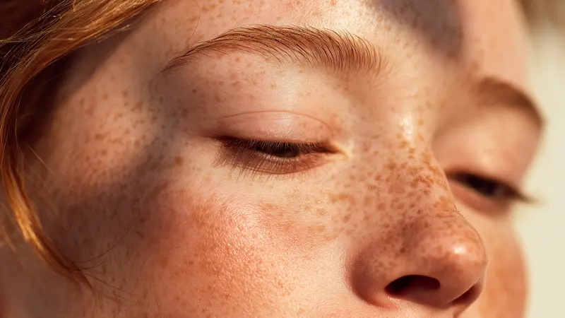
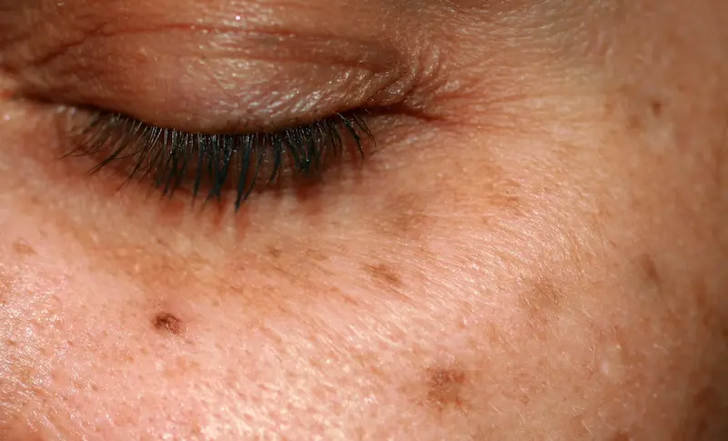
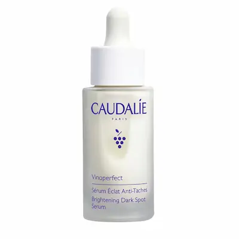
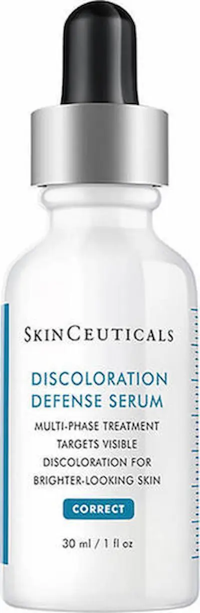
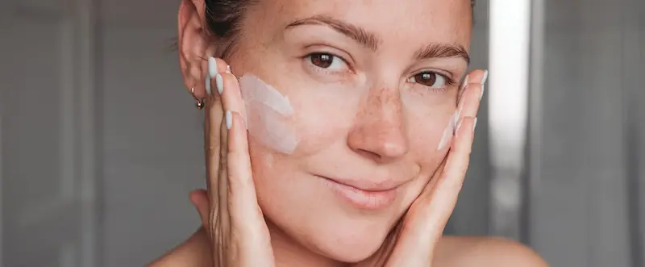

Ton uniform și strălucire naturală: lupta eficientă împotriva hiperpigmentăriiCe este hiperpigmentarea?
Pigmentarea este rezultatul producției excesive de melanină, pigmentul natural al pielii. Atunci când procesul de distribuție a melaninei este perturbat sub influența razelor UV sau a inflamațiilor, pe suprafață apar pete brune, pistrui sau zone întunecate extinse (melasmă).
Este important de înțeles că petele pigmentare nu sunt doar o problemă estetică, ci și un semnal de deteriorare a celulelor. Pielea încearcă să se protejeze de „agresori” creând un ecran întunecat. Îngrijirea modernă vizează blocarea sintezei de melanină și regenerarea celulară accelerată pentru a reda uniformitatea tenului.
Tipuri de pete și cauzele apariției lor
Tipurile principale includ lentigo solar (pete de la soare), hiperpigmentarea post-inflamatorie (semne lăsate de acnee) și pigmentarea hormonală. În climatul din România, cauza principală este fotoîmbătrânirea — efectul cumulativ al expunerii la soare fără protecție adecvată.
Fără o corecție adecvată, petele devin în timp mai închise la culoare și se „instalează” mai adânc în derm. O strategie eficientă de combatere include nu doar iluminarea defectelor existente, ci și prevenirea apariției altora noi prin întărirea funcțiilor de protecție ale pielii.

Reguli de îngrijire pentru un ton uniform
Componente care iluminează și uniformizează nuanța
| Ingredient | Acțiune |
|---|---|
| Vitamina C (Acid L-Ascorbic) | Antioxidant puternic: blochează producția de melanină și oferă tenului strălucire |
| Niacinamidă (Vitamina B3) | Împiedică transferul pigmentului către straturile superioare și reduce aspectul porilor |
| Acid Azelaic | Luptă eficient împotriva semnelor post-acneice și a melasmei, netezind microrelieful |
| Retinol (Vitamina A) | Accelerează regenerarea celulară, „eliminând” propriu-zis celulele cu pete pigmentare |
Cele mai bune produse pentru pigmentarea pielii


Ce să NU faci în caz de pigmentare?
Cum să învingi hiperpigmentarea?
Procesul de iluminare necesită timp și consecvență. Petele nu dispar peste noapte, deoarece sunt prezente în mai multe straturi ale epidermei. Regula de aur: combină suprimarea cu regenerarea — folosește seruri inhibitoare de melanină împreună cu exfolianți blânzi.
Acordă o atenție deosebită antioxidanților. Vitamina E și Acidul Ferulic potențează acțiunea ingredientelor de iluminare și creează o barieră suplimentară împotriva daunelor UV. Reține: rezultatul depinde în proporție de 80% de cât de disciplinat aplici crema cu protecție solară.

Factorii externi și îngrijirea în România
În regiunea noastră, pielea este expusă la radiații solare intense mai bine de jumătate de an. Indicele ultraviolet ridicat din România, din aprilie până în octombrie, face ca pigmentarea să fie cea mai răspândită problemă estetică, transformând pistruii obișnuiți în lentigo solar profund.
Pentru o luptă eficientă împotriva petelor în București și în alte orașe mari, nu este suficientă doar utilizarea unei creme de iluminare. Este necesară introducerea serurilor antioxidante (Vitamina C, Acid Ferulic) pentru protecția împotriva smogului și a apei dure, precum și respectarea strictă a protocolului de protecție SPF, chiar și în timpul scurtelor plimbări urbane.
Întrebări frecvente
Se poate scăpa definitiv de petele pigmentare?
Da, dar procesul necesită timp și disciplină. Petele de suprafață (post-acneice) dispar în 4-8 săptămâni. Melasma profundă necesită un control constant, deoarece celulele melanocite au „memorie” și se pot reactiva la prima expunere neprotejată la soare.
De ce petele devin mai închise după utilizarea unei creme de iluminare?
Cel mai probabil, sari peste etapa aplicării protecției SPF. Multe ingrediente active (retinol, acizi) fac pielea mai sensibilă la radiațiile ultraviolete. Fără ecran solar, soarele afectează celulele regenerate și mai puternic, intensificând pigmentul.
Ajută remediile naturiste (lămâia, apa oxigenată) împotriva petelor?
Utilizarea metodelor agresive „din bucătărie” este extrem de periculoasă. Acestea provoacă arsuri chimice și iritații severe, ceea ce duce la hiperpigmentare post-inflamatorie — petele vor deveni și mai închise și mai extinse decât înainte.
Trebuie să folosesc SPF iarna în România, dacă nu este soare?
Da, este obligatoriu. Razele de tip UVA, responsabile pentru pigmentare și îmbătrânire, pătrund prin nori și prin sticla ferestrelor tot anul. Dacă indicele UV este mai mare de 2, protecția este necesară pentru a păstra rezultatele tratamentelor tale.